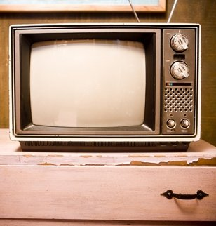

Rasperry

Petit mais costaud
ce petit circuit qui ressemble de loin a l'interieur d'un telephone portable ou a un lecteur mp3 est en fait un ordinateur tres aprecier des amateurs d'optimisation en terme de consomation electrique et de gain de place

en effets le raspberry peux se brancher sur une simple television
Il est aussi tres attrayant pour son utilisation serveur car grace a ca faible consomation vous pouvez beneficiez facilement d'un serveur chez vous qui tourne H24 .
Ce petit bijoux de technologie coute le prix exorbitant de 30 a 120euro environ.